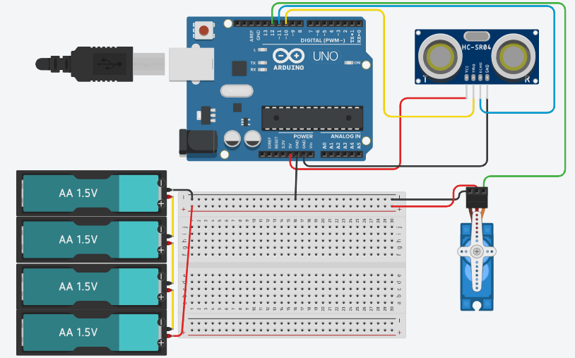

Radar System using Ultrasonic Sensor
This project demonstrates how to build a simple radar system using an ultrasonic sensor, servo motor, and Arduino. The sensor scans the surroundings and detects objects by measuring distance, just like a real radar system.
IntermediateComponents Required
- Arduino Uno
- HC-SR04 Ultrasonic Sensor
- Servo Motor (SG90)
- Breadboard
- Jumper Wires
- USB Cable
Circuit Connections
Follow the steps below to connect the ultrasonic sensor and servo motor with the Arduino board. This setup allows the sensor to scan the surroundings by rotating with the servo motor.
- Connect the VCC pin of the ultrasonic sensor to the 5V pin on Arduino.
- Connect the GND pin of the ultrasonic sensor to the GND pin on Arduino.
- Connect the TRIG pin of the sensor to digital pin 10 on Arduino.
- Connect the ECHO pin of the sensor to digital pin 11 on Arduino.
- Connect the signal pin of the servo motor to digital pin 12 on Arduino.
- Connect the VCC of the servo motor to 5V and GND to GND.

Here is the circuit diagram for reference. The ultrasonic sensor measures distance, while the servo motor rotates it to create a scanning radar effect.
Arduino Code
/*
Project: Radar System using Ultrasonic Sensor
description: This project demonstrates how to create a simple radar system using an ultrasonic
sensor and a servo motor with Arduino. The sensor scans the surroundings by rotating with the
servo, measuring distances to objects, and sending data to the Serial Monitor for visualization.
Components:
- Arduino Uno
- HC-SR04 Ultrasonic Sensor
- SG90 Servo Motor
- Breadboard
- Jumper Wires
- USB Cable
Author: Circuit Creation RN
*/
// Includes the Servo library
#include <Servo.h>
// Defines Tirg and Echo pins of the Ultrasonic Sensor
const int trigPin = 10;
const int echoPin = 11;
// Variables for the duration and the distance
long duration;
int distance;
Servo myServo; // Creates a servo object for controlling the servo motor
void setup() {
pinMode(trigPin, OUTPUT); // Sets the trigPin as an Output
pinMode(echoPin, INPUT); // Sets the echoPin as an Input
Serial.begin(9600);
myServo.attach(12); // Defines on which pin is the servo motor attached
}
void loop() {
// rotates the servo motor from 15 to 165 degrees
for(int i=15;i<=165;i++){
myServo.write(i);
delay(30);
distance = calculateDistance();// Calls a function for calculating the distance measured by the Ultrasonic sensor for each degree
Serial.print(i); // Sends the current degree into the Serial Port
Serial.print(","); // Sends addition character right next to the previous value needed later in the Processing IDE for indexing
Serial.print(distance); // Sends the distance value into the Serial Port
Serial.print("."); // Sends addition character right next to the previous value needed later in the Processing IDE for indexing
}
// Repeats the previous lines from 165 to 15 degrees
for(int i=165;i>15;i--){
myServo.write(i);
delay(30);
distance = calculateDistance();
Serial.print(i);
Serial.print(",");
Serial.print(distance);
Serial.print(".");
}
}
// Function for calculating the distance measured by the Ultrasonic sensor
int calculateDistance(){
digitalWrite(trigPin, LOW);
delayMicroseconds(2);
// Sets the trigPin on HIGH state for 10 micro seconds
digitalWrite(trigPin, HIGH);
delayMicroseconds(10);
digitalWrite(trigPin, LOW);
duration = pulseIn(echoPin, HIGH); // Reads the echoPin, returns the sound wave travel time in microseconds
distance= duration*0.034/2;
return distance;
}
Upload the Code
- Connect Arduino to your computer.
- Open Arduino IDE and paste the code.
- Select correct board and port.
- Click Upload.
- Open Processing software to visualize radar output.
Code Explanation
Let us understand how the radar system code works step by step. This project combines a servo motor and an ultrasonic sensor to scan and detect objects.
Including the Library
#include <Servo.h> includes the Servo library which allows us
to control the servo motor easily.
Creating Servo Object
Servo myServo; creates a servo object that will control the rotation
of the ultrasonic sensor for scanning.
Defining Pins
const int trigPin = 10; and const int echoPin = 11; define the pins
connected to the ultrasonic sensor.
setup() Function
The setup() function initializes Serial communication at 9600 baud,
sets trigPin as OUTPUT and echoPin as INPUT, and attaches the servo motor to pin 12
using myServo.attach(12).
Servo Scanning
The first for loop rotates the servo from 15° to 165°, and the second loop
rotates it back from 165° to 15°. This back-and-forth motion creates a continuous
radar scanning effect.
Triggering the Sensor
The trigPin is set HIGH for 10 microseconds to send an ultrasonic pulse. This pulse travels through the air and reflects back when it hits an object.
Reading the Echo
pulseIn(echoPin, HIGH) measures how long the echo signal stays HIGH.
This duration represents the time taken by the sound wave to travel to the object and return.
Calculating Distance
The formula distance = duration * 0.034 / 2 converts time into distance in centimeters.
The value 0.034 represents the speed of sound in cm/µs.
Custom Function
The calculateDistance() function handles triggering the ultrasonic sensor
and calculating the distance. This keeps the main loop clean and organized.
Sending Data to Processing
The Arduino sends data in the format angle,distance. using Serial communication.
The comma separates angle and distance values, while the dot indicates the end of each data set.
This format is used by Processing software to create the radar visualization.
Processing Visualization
To visualize the radar output, you can use Processing software. It reads the serial data from Arduino and creates a graphical representation of the radar scan. Click here to download the software Processing IDE.
Please copy the following code into a new Processing sketch to visualize the radar system. Make sure to adjust the COM port in the code to match your Arduino's connection. And RUN the code
Processing Code
import processing.serial.*; // imports library for serial communication
import java.awt.event.KeyEvent; // imports library for reading the data from the serial port
import java.io.IOException;
Serial myPort; // defines Object Serial
// defines variables
String angle="";
String distance="";
String data="";
String noObject;
float pixsDistance;
int iAngle, iDistance;
int index1=0;
int index2=0;
PFont orcFont;
void setup() {
size (1200, 700); // ***CHANGE THIS TO YOUR SCREEN RESOLUTION***
smooth();
myPort = new Serial(this,"COM8", 9600); // ***CHANGE THE COM PORT NUMBER TO YOUR COM PORT NUMBER***
myPort.bufferUntil('.'); // reads the data from the serial port up to the character '.'. So actually it reads this: angle,distance.
}
void draw() {
fill(98,245,31);
// simulating motion blur and slow fade of the moving line
noStroke();
fill(0,4);
rect(0, 0, width, height-height*0.065);
fill(98,245,31); // green color
// calls the functions for drawing the radar
drawRadar();
drawLine();
drawObject();
drawText();
}
void serialEvent (Serial myPort) { // starts reading data from the Serial Port
// reads the data from the Serial Port up to the character '.' and puts it into the String variable "data".
data = myPort.readStringUntil('.');
data = data.substring(0,data.length()-1);
index1 = data.indexOf(","); // find the character ',' and puts it into the variable "index1"
angle= data.substring(0, index1); // read the data from position "0" to position of the variable index1 or thats the value of the angle the Arduino Board sent into the Serial Port
distance= data.substring(index1+1, data.length()); // read the data from position "index1" to the end of the data pr thats the value of the distance
// converts the String variables into Integer
iAngle = int(angle);
iDistance = int(distance);
}
void drawRadar() {
pushMatrix();
translate(width/2,height-height*0.074); // moves the starting coordinats to new location
noFill();
strokeWeight(2);
stroke(98,245,31);
// draws the arc lines
arc(0,0,(width-width*0.0625),(width-width*0.0625),PI,TWO_PI);
arc(0,0,(width-width*0.27),(width-width*0.27),PI,TWO_PI);
arc(0,0,(width-width*0.479),(width-width*0.479),PI,TWO_PI);
arc(0,0,(width-width*0.687),(width-width*0.687),PI,TWO_PI);
// draws the angle lines
line(-width/2,0,width/2,0);
line(0,0,(-width/2)*cos(radians(30)),(-width/2)*sin(radians(30)));
line(0,0,(-width/2)*cos(radians(60)),(-width/2)*sin(radians(60)));
line(0,0,(-width/2)*cos(radians(90)),(-width/2)*sin(radians(90)));
line(0,0,(-width/2)*cos(radians(120)),(-width/2)*sin(radians(120)));
line(0,0,(-width/2)*cos(radians(150)),(-width/2)*sin(radians(150)));
line((-width/2)*cos(radians(30)),0,width/2,0);
popMatrix();
}
void drawObject() {
pushMatrix();
translate(width/2,height-height*0.074); // moves the starting coordinats to new location
strokeWeight(9);
stroke(255,10,10); // red color
pixsDistance = iDistance*((height-height*0.1666)*0.025); // covers the distance from the sensor from cm to pixels
// limiting the range to 40 cms
if(iDistance<40){
// draws the object according to the angle and the distance
line(pixsDistance*cos(radians(iAngle)),-pixsDistance*sin(radians(iAngle)),(width-width*0.505)*cos(radians(iAngle)),-(width-width*0.505)*sin(radians(iAngle)));
}
popMatrix();
}
void drawLine() {
pushMatrix();
strokeWeight(9);
stroke(30,250,60);
translate(width/2,height-height*0.074); // moves the starting coordinats to new location
line(0,0,(height-height*0.12)*cos(radians(iAngle)),-(height-height*0.12)*sin(radians(iAngle))); // draws the line according to the angle
popMatrix();
}
void drawText() { // draws the texts on the screen
pushMatrix();
if(iDistance>40) {
noObject = "Out of Range";
}
else {
noObject = "In Range";
}
fill(0,0,0);
noStroke();
rect(0, height-height*0.0648, width, height);
fill(98,245,31);
textSize(25);
text("10cm",width-width*0.3854,height-height*0.0833);
text("20cm",width-width*0.281,height-height*0.0833);
text("30cm",width-width*0.177,height-height*0.0833);
text("40cm",width-width*0.0729,height-height*0.0833);
textSize(40);
text("Indian Lifehacker ", width-width*0.875, height-height*0.0277);
text("Angle: " + iAngle +" °", width-width*0.48, height-height*0.0277);
text("Distance: ", width-width*0.26, height-height*0.0277);
if(iDistance<40) {
text(" " + iDistance +" cm", width-width*0.225, height-height*0.0277);
}
textSize(25);
fill(98,245,60);
translate((width-width*0.4994)+width/2*cos(radians(30)),(height-height*0.0907)-width/2*sin(radians(30)));
rotate(-radians(-60));
text("30°",0,0);
resetMatrix();
translate((width-width*0.503)+width/2*cos(radians(60)),(height-height*0.0888)-width/2*sin(radians(60)));
rotate(-radians(-30));
text("60°",0,0);
resetMatrix();
translate((width-width*0.507)+width/2*cos(radians(90)),(height-height*0.0833)-width/2*sin(radians(90)));
rotate(radians(0));
text("90°",0,0);
resetMatrix();
translate(width-width*0.513+width/2*cos(radians(120)),(height-height*0.07129)-width/2*sin(radians(120)));
rotate(radians(-30));
text("120°",0,0);
resetMatrix();
translate((width-width*0.5104)+width/2*cos(radians(150)),(height-height*0.0574)-width/2*sin(radians(150)));
rotate(radians(-60));
text("150°",0,0);
popMatrix();
}
IMPORTANT: Understanding the COM Port
The myPort = new Serial(this,"COM8", 9600); line establishes serial communication between Processing and Arduino.
COM8 is the serial port number where my Arduino is connected. This varies depending on your computer and USB port.
How to Find Your COM Port
- On Windows: Open Arduino IDE → Tools → Port → You will see options like COM3, COM4, COM8, etc. Select the one with "Arduino Uno" next to it.
- On Mac: The ports appear as /dev/cu.usbserial-XXXXX or similar.
- On Linux: The ports appear as /dev/ttyUSB0, /dev/ttyUSB1, etc.
Changing the COM Port
To change the COM port in Processing code, simply modify the port name in line:
myPort = new Serial(this,"COM8", 9600);
Replace COM8 with your actual COM port number (e.g., COM3, COM5, COM9, etc.).
The baud rate 9600 must match the baud rate set in the Arduino code.
Tips
- Make sure Arduino IDE Serial Monitor is closed before running Processing, as both cannot use the same COM port simultaneously.
- Upload the Arduino code first before running the Processing visualization.
- Adjust screen resolution in
size(1200, 700)to match your display.
Common Mistakes & Troubleshooting
- Servo not moving: Check if the servo signal wire is connected to the correct pin (pin 11). Also ensure proper power supply, as servos need stable voltage.
- No distance detection: Verify that the TRIG and ECHO pins are correctly connected. Incorrect wiring will prevent the sensor from working.
- Unstable or incorrect readings: Loose connections or electrical noise can cause fluctuations. Make sure all wires are properly connected.
- No output in Processing: Ensure the correct COM port is selected and the baud rate is set to 9600. Also make sure Arduino Serial Monitor is closed.
- Radar display not working: Check if the data format sent from Arduino matches what Processing expects (angle,distance).
- Upload error: Select the correct Arduino board and COM port from the Tools menu in Arduino IDE.
What You Learned
- How radar systems work using ultrasonic waves
- Using servo motors for scanning
- Serial communication with Processing
- Real-time object detection